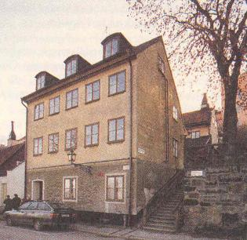
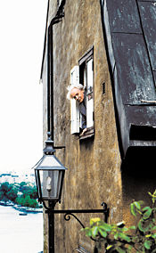
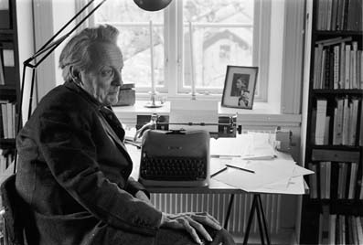
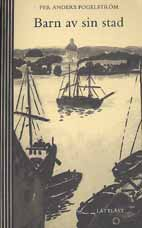
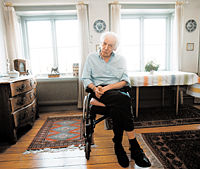
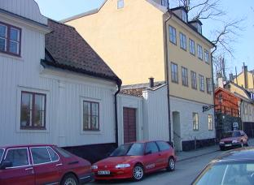
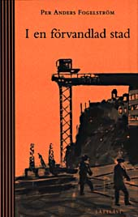
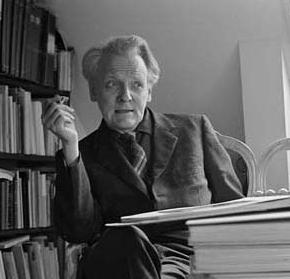
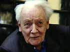
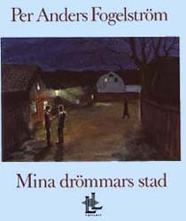

| Ingen har skildrat Stockholm som författaren Per Anders Fogelström. Per Anders Fogelström blev 80 år. Han kommer för evigt att förknippas med Stockholm. Den stad han med sin storslagna berättargenerositet delade med sig av till alla oss andra. Till oss som trampade samma gator som han. Först utan att se. Men sen såg vi – Staden. Och vi såg den med hans ögon. Han bodde på Fjällgatan – högst uppe på Söders höjder med en hisnande utsikt över hela sin Stad. Ibland mötte man honom där uppe. Man ville gärna gå fram och hälsa, för under årens lopp hade vi haft så många gemensamma upplevelser. De sträckte sig genom flera hundra år.  Vem kan glömma klädesarbetaren Johannes Krohn i boken Vävarnas barn? Han som gick ut bakom avskrädesskjulet på Barnängens fabrik på Södermalm och slog en morgondrill en varm sommarmorgon 1748. Sen gick åren. Decennierna och seklerna. Stockholm förvandlades inför vår inre syn. Till slut – många böcker senare – står Johannes dotterdotters dotterdotters dottersons dottersons dotter Lotta i Storkyrkan och sjunger. Året är 1968. Lotta och hennes vänner har samlats till en minnesgudstjänst över den mördade medborgarkämpen Martin Luther King. Sången: We shall overcome. Allt hänger ihop. Johannes skulle ha känt igen sin Lotta. Om han levat skulle han själv stått där i kyrkan och sjungit. För det var ingen slump att Lotta sjöng för Martin Luther King. Per Anders Fogelström skrev om de fattiga, de vanliga, ärliga och hårt arbetande människor som bär upp historien och formar landet. Han var en sån själv. Han föddes 1917. Föräldrarna bodde i S:t Petersburg där pappa jobbade åt Asea. Men det var revolution och Fogelströms flydde hem till Sverige. Mamma Naemi tog sista båten hem till Sverige för att föda Per Anders. Pappa Arthur gick över gränsen till Finland. 1918 flyttade familjen till Viborg. Så kom dråpslaget. Pappa tröttnade plötsligt på allt. Han ville bara bort. Bort till ett bättre liv, till ett bättre land. Han ville till Amerika där en duktig man kunde bli rik på sitt arbete. Familjen bönade och bad. Men inget hjälpte. Pappa hade dessutom träffat en annan kvinna. Han skilde sig och for. Per Anders Fogelström berättade om avskedet: – Jag minns att vi vinkade av honom vid stationen, jag grät. Han såg honom aldrig mer. – Men varje gång när någon ringde på dörren – många år senare – fanns hoppet där. Kanske är det han. . . Ingen vet hur pappan slutade sina dagar. Sannolikt dog han utfattig och eländig omkring 1920. Då kom det inga fler brev. Hans saknad efter pappan som inte fanns där, beskrev han i boken Hem till sist, som kom för ett par år sedan. Per Anders Fogelström uppfostrades av kvinnor. Han levde i en kvinnovärld. Först med sin mamma och sin syster hemma hos mormor. Sen flyttade den stympade familjen in i Danelii stiftelses hus för ”självförsörjande kvinnor” på Bondegatan 26 på Söder i Stockholm. Få manliga författare har med sån insiktsfull ömhet skildrat det kvinnliga livet. Förklaringen finns i uppväxten. Hans faster satte honom i den flotta Whitlockska samskolan på Östermalm. Där var det ingen som frågade efter hans hemförhållanden. Man tog liksom för givet att de var som alla de andras. – Men en dag var det nära ögat, berättade han: – Vi var på teckningsutflykt till Åsöberget. Men det gick vägen, ingen propsade på att komma hem till mig. Han hoppade av skolan och började jobba i bokhandel och som ungdomsledare. Han skrev hela tiden – i Folket i Bild och på sin skrivkammare och slog igenom med dunder och brak 1951 med skandalboken Sommaren med Monika som filmatiserades av Bergman.  Sen skrev han – 39 böcker till. Man väntade alltid på att nästa bok skulle komma. Det var väl därför man inte gick fram och hälsade när man mötte honom på Fjällgatan. Han verkade alltid gå och fundera på något. Man ville inte störa. Du är borta nu, Per Anders. Men Din Stad, min Stad, alla våra drömmars storslagna Stad kommer alltid att finnas kvar. Inte minst tack vare Dig.
TISDAG 23 JUNI 1998 Carl-Anton: Han lämnar ett stort tomrum efter sig
Carl Anton, vissångare: – Per Anders Fogelström lämnar ett stort tomrum efter sig. Han var med i mina sommarprogram i TV och fick alla att tystna när han ställde sig på scen, vilket var unikt. Han var den stora stockholmsskildraren, jag tyckte mycket om hans böcker som han alltid skickade till mig. ”Känner stor värme till honom” Björn Ranelid, författare: – Fogelström var en omistlig Stockholmskännare. Han har gett liv, blod och hjärta åt huvudstaden. Han var oerhört noggrann och nitisk. Vi hade långa samtal när vi träffades och jag känner en stor värme till honom. ”Hade alltid kloka synpunkter”
 Ingvar Skogsberg, som regisserade filmen ”Mina drömmars stad”: – Han var öppen och hygglig. Jag minns att han följde inspelningen av ”Mina drömmars stad” noggrant och att han hade kloka synpunkter. Jag minns med glädje att han tyckte om filmen då den var klar.
 ”Hans kunskaper imponerade” Mats Hulth, finansborgarråd, Stockholm: – Fogelström var för många, inklusive mig, en av de riktigt stora Stockholmsskildrarna. Hans kunskaper och engagemang i Stockholm var mycket djupt och imponerande. ”Minns honom sen barnsben” Niklas Rådström, författare: – Jag minns honom sen barnsben och har även träffat honom senare. Fogelström förkroppsligade en svensk folkbildarkultur och var en omistlig Stockholmsskildrare. ”Arbetade som en historiker” Per Wästberg, författare: – Han har arbetat som en dokumentärhistoriker med fri fantasi och på det viset gjort levande de vanliga människorna, arbetarna, trälarna, de som hade ett helvete i 1700-talets Söder, Barnängens fabriker, och fått oss att se tillvaron ur deras perspektiv. Han var ganska tidig, kanske unik, med att göra detta på det historiska området. – Och det var nu när jag för två månader sedan åt middag med honom, som jag märkte att han verkligen var trött. Rullstolsbunden efter en stroke, fortfarande skrivande på en stor roman om Ladugårdslandet, Östermalm, men ändå klagande över att han inte kom åt sitt bibliotek, att han inte rörde sig. ”Hade enorm arbetskapacitet” Ernst Brunner, författare: – Jag minns honom framför allt från senare år när vi blev personligen bekanta med varandra. Och jag minns honom som en väldigt ödmjuk och vänlig själ med en enorm arbetskapacitet, som man önskar att den unga generationen författare kunde ha. Han hade någon slags ”murvelinställning” till arbetet. Han grävde väldigt mycket, han satt olidligt länge på bibliotek och var outröttlig i sina efterforskningar, när det gällde att skaffa fakta kring sina böcker. Allt som ofast lyckades han göra skönlitteratur av de här faktaarbetena och där har han egentligen ingen som har varit hans jämlike. ”Viktig för fredsrörelsen” Maria Ermanno, ordförande i Svenska Freds- och skiljedomsföreningen: – Per Anders Fogelström spelade en avgörande roll i att Sverige under 60-talet valde att inte skaffa egna kärnvapen. Vi kommer att minnas honom som en av de mest betydelsefulla personerna i den svenska fredsrörelsens historia. ”Han var oerhört fin och älskad” Eva Bonnier, vd för Albert Bonniers förlag: – Han var en så oerhört fin och älskad människa. Han har betytt väldigt mycket som författare och samtidigt lyckats nå en stor publik.
Bibliografi Romaner Att en dag vakna (1949)
Ligister (1949)
Sommaren med Monika (1951)
Möten i skymningen (1952)
Medan staden sover (1953, nyutgiven 1984)
I kvinnoland (1954)
En natt ur nuet (1955)
En borg av trygghet (1957)
Expedition Dolly (1958)
Tack vare Iris (1959, nyutgiven 1984) Stad Mina drömmars stad (1960)
Barn av sin stad (1962)
Minns du den stad (1964)
I en förvandlad stad (1966)
Stad i världen (1968)
Café Utposten (1970) Kamrater Upptäckarna (1972)
Revoltörerna (1973)
Erövrarna (1975)
Besittarna (1977)
Svenssons (1979)
Vävarnas barn (1981)
Krigens barn (1985)
Vita bergens barn (1987)
Komikern (1989)
Mödrar och söner (1991) |
| Den folkkäre författaren somnade in i lördags, 80 år gammal. – Han togs in akut på sjukhus på midsommarafton och avled nästa morgon, säger sonen Per Fogelström. Per Anders Fogelström har länge haft problem med lungorna och på midsommarafton försämrades hans tillstånd drastiskt. Den älskade Stockholmsskildraren, som skrivit över 40 böcker, togs in akut på Södersjukhuset i Stockholm, där han avled. I dag skulle Per Anders Fogelström varit en av hedersgästerna vid Stockholms stadshus 75-årsjubileum. En skulptur av författaren, formgiven av konstnären Bo Englund, ska avtäckas på trappan till Blå hallen och Fogelström själv skulle ha funnits vid dess fot. – Jag pratade med honom för en dryg vecka sedan och då sa han att han skulle komma, säger Ingemar Ingevik, ordförande i kommunfullmäktige i Stockholm. Skulpturen avtäcks i dag Efter samråd med Per Anders Fogelströms anhöriga kommer skulpturen ändå att avtäckas i dag. Den folkkäre författaren, vars romaner och skildringar finns i hundratusentals svenska hem, har varit sjuk några år. I början på 1995 drabbades Fogelström av en hjärnblödning mitt i en TV-inspelning. – Plötsligt höll inte mina ben längre. Jag slocknade. Det var som att vrida om en kontakt, har han senare berättat. Fogelström vårdades på sjukhus i nästan ett halvår, först på Södersjukhuset och sedan på Erstagårdskliniken.  Förlamad i ben och arm Ena handen och vänster ben förlamades och under den mödosamma rehabiliteringen var författaren tvungen att lära sig att gå och prata igen. Men Fogelström flyttade hem till sitt älskade Fjällgatan på Söder igen, en gata där han bodde under större delen av sitt liv. Och han började skriva igen – på en roman om stadsdelen Östermalm i Stockholm. – Det gick långsamt. Jag tror att Per Anders långsamt insåg att romanen aldrig skulle bli klar, säger förläggaren Eva Bonnier.  – Han hade svårt att ta sig till bibliotek och arkiv, vilka var mycket viktiga för hans författarskap. Per Anders Fogelström, som hela sitt liv var något av en ensamvarg, var de sista åren rullstolsburen och höll sig mest hemma. Fick Ivar Lo-stipendiet 80-årsdagen i augusti förra året firades i hemmet med familjen och olika uppvaktningar. – Han ville inte låtsas om sjukdomen. Han beklagade sig aldrig utan höll humöret uppe, säger vännen Carl Anton. I februari i år fick Fogelström fackföreningsrörelsens Ivar Lo-Johanssons-stipendium på 125 000 kronor. I en intervju i Aftonbladet sa han att han tänkte använda pengarna till att resa. – Det är ett privilegium att få jobba vid 80 års ålder, sa Per Anders Fogelström i en intervju som skulle komma att bli hans sista. Han sörjs närmast av hustrun Sara Fogelström, 73, och sonen Per Fogelström, 48. Oisín Cantwell
TISDAG 23 JUNI 1998 Författaren och journalisten Arne Reberg, som skrivit boken ”Per Anders Fogelström – Stockholms förste älskare”, berättar här om sina sista möten med Per Anders Fogelström i våras. ”Jag märkte en tyglad vrede över förtryck och orättvisor” Per Anders Fogelström ägde en sällsynt anspråkslöshet och höjde sällan rösten, än mindre näven. Efter långa samtal i hans diktarboning på Söders höjder uppfattade jag en lidelse bakom hans behärskning, en tyglad vrede över förtryck och orättvisor. Men så fort det slog ut en röd låga från hans violblå blick infann det sig genast ett eftersinnat ljus. När jag ville pressa honom på hans republikanska övertygelse svarade han först att vi inte kunde sätta oss in i hur de kungliga har det, och att de förvisso hade det svårt, påpassade som de var. Med ett skruvat tillägg: – Just därför finns det dubbel anledning till att vi befriar dem från deras betungande privilegier...  I sin lågmälda framtoning talade Per Anders Fogelström ogärna om sig själv. Men sista gången vi träffades öppnade han lite på den privata dörren, det blev en historia med många bottnar, långt ner i tidig barndom, ja ända till före födelsen. Hur det stormade redan i fostervattnet då mamma Naemi Fogelström väntade honom i Petrograd det blodiga krigsåret 1917 och tvingades ta skydd i portuppgångar när revolutionärer drabbade samman på gatorna. En gång drogs hon in i en sammandrabbning och tog sig hem med sönderrivna kläder och bankande hjärta. Med tanke på att fostret redan i femte månaden har fullt utvecklad hörsel och hör mammas hjärta slå i sjuttio decibel höll Per Anders Fogelström för troligt att han utsattes för ett öronbedövande dån, sammanpressad av adrenalintryck. Faderlös fattigpojke Det fanns en tidig smärtpunkt. Kanske ett trauma? Antagligen också en drivkraft. Att sedan faderslängtan är drivkraften i månget författarskap, blev alldeles tydligt hos Per Anders Fogelström, den tidigt faderlöse fattigpojken. – Med åren har jag förstått att jag präglats hårt av pappas försvinnande, erkände han. Gammelmansrösten blev tunn som om han gick i barndomen då han berättade hur han som sexåring stod på järnvägsstationen med sin farmor vid handen för att ta farväl av sin far, som skulle söka sin utkomst i Amerika. – Jag minns att jag grät och att pappa lutade sig ut från kupéfönstret och sa att han snart skulle komma hem igen. Jag trodde honom inte så liten jag var. Barnet visste. Det var ett avsked för livet. Förtvivlad och övergiven När tåget tuffade sin väg och fadern försvann i ett rökmoln från lokomotivet grät farmodern. Hemma satt Per Anders mamma, förtvivlad över att ha blivit övergiven. Hennes sorg blev en saknad som skulle kasta en skugga över Per Anders uppväxt. – Mamma väntade på honom hela livet. Ofattbart att hon kunde. Det fanns nätter då jag hörde henne ligga vaken i förtvivlans gråt. Det tärde hårt på henne. Fastän pappa svek oss, aldrig ett ont om honom till oss barn. Snarare lyckades hon ge Per Anders en god fadersbild att växa upp med. – Hon höll vid liv ett fint fadersminne, och på så vis kunde jag bygga upp en bild av far, värd att se upp till. Den manliga förebild varje pojke behöver. In i det sista behöll Per Anders Fogelström sitt tvivel på det helfrälsta och tvärsäkra: Och när jag frågade honom om vad han trodde om livet efter detta, svarade han lakoniskt: – Jag vill inte applådera en föreställning förrän jag sett den. Arne Reberg 
Dikter Orons giriga händer (1947) Stockholmiana En bok om Söder (1953)
Kring Strömmen (1962)
Stockholm – stad i förvandling (1963)
En bok om Kungsholmen (1965)
Okänt Stockholm (1967)
Ett berg vid vattnet (1969)
Söder om tullen (1969)
Stad i bild (1970)
Utsikt över stan (1974)
En bok om Stockholm (1978)
Stockholm (1979)
Stockholms gatunamn, tills med N G Stahre mfl (1982)
Ur det försvunna (1995) Övrigt Världspolitik i karikatyrer I-III, tills med S P Bahnsen (1943-45)
Tretton ödesdigra år, tills med Lisa Matthias (1946)
Skämt och oförskämt (1949)
25 svenska skämttecknare, tills med Ivar Öhman (1954)
I stället för atombomb, tills med Rol. Morell (1958)
Borgerlig begravning, tills med Ture Nerman (1962)
Kampen för fred (1971)
Vägar till fred (1971)
Julböckerna (1973)
Kommentarer och noter till Vävarnas barn (1981)
Kommentarer och noter till Krigens barn (1985)
Vägen till nuets stad (1986)
Idyll och explosion (1992)
Hem, till sist (1993) (självbiografi) Teater Röster ur nuet
STAD-serien
Mina drömmars stad
Minns du den stad Film Medan staden sover (1950)
Sommaren med Monika (1953)
Möten i skymningen (1957)
Mina drömmars stad (1976)


|